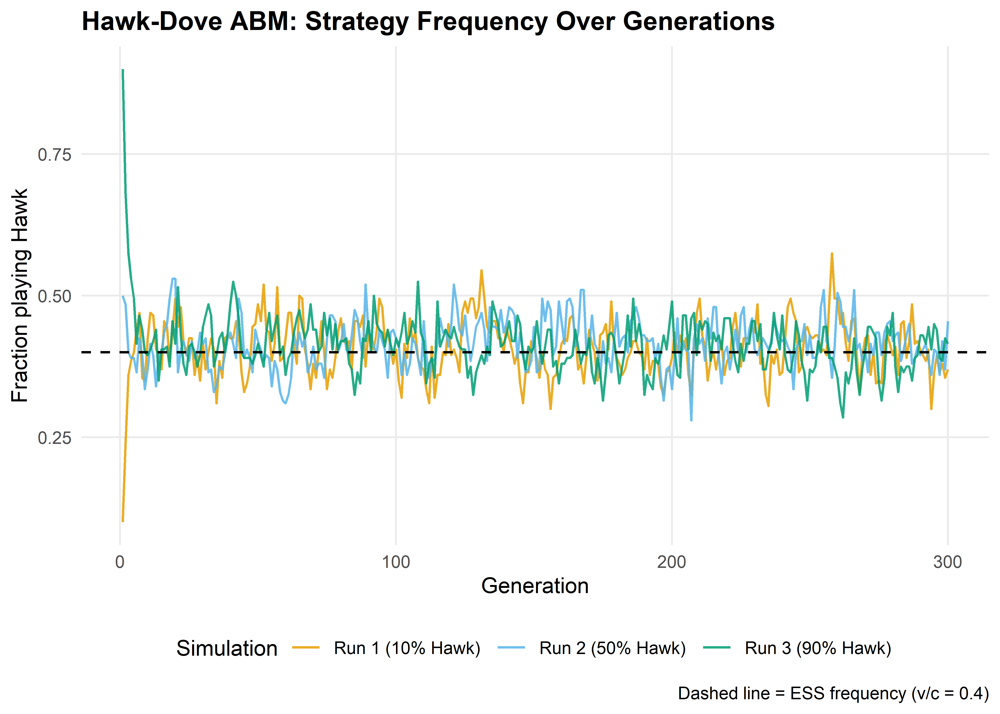
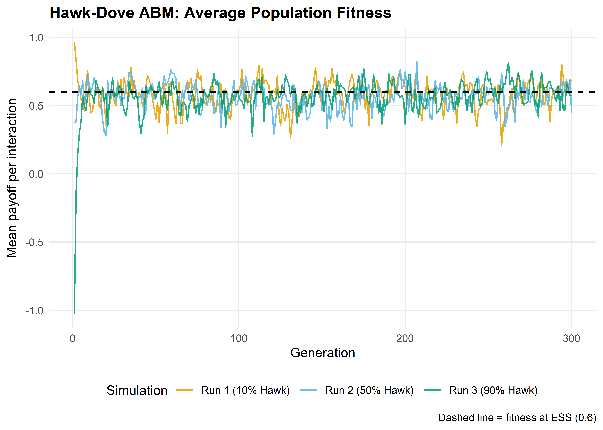

# Hawk-Dove payoff function
hawk_dove_payoff <- function(strategy1, strategy2, v = 2, c = 5) {
if (strategy1 == "Hawk" && strategy2 == "Hawk") {
return((v - c) / 2)
} else if (strategy1 == "Hawk" && strategy2 == "Dove") {
return(v)
} else if (strategy1 == "Dove" && strategy2 == "Hawk") {
return(0)
} else {
return(v / 2)
}
}
# Compute fitness for all agents via random pairwise interactions
compute_fitness <- function(population, n_interactions, v, c) {
n <- length(population)
fitness <- numeric(n)
for (i in seq_len(n)) {
opponents <- sample(seq_len(n)[-i], min(n_interactions, n - 1))
payoffs <- vapply(opponents, function(j) {
hawk_dove_payoff(population[i], population[j], v, c)
}, numeric(1))
fitness[i] <- mean(payoffs)
}
fitness
}
# Fitness-proportional selection with shift
select_parents <- function(population, fitness, n) {
shifted <- fitness - min(fitness) + 0.01
probs <- shifted / sum(shifted)
idx <- sample(seq_along(population), n, replace = TRUE, prob = probs)
population[idx]
}
# Mutation
mutate_population <- function(population, mu) {
strategies <- c("Hawk", "Dove")
mutate_mask <- runif(length(population)) < mu
population[mutate_mask] <- vapply(population[mutate_mask], function(s) {
sample(setdiff(strategies, s), 1)
}, character(1))
population
}18 Agent-Based Models for Strategic Interaction
Abstract
Building agent-based models where heterogeneous agents play games, reproduce proportional to fitness, and evolve strategies over generations — illustrated with the Hawk-Dove game.
Keywords
agent-based model, ABM, Hawk-Dove, evolutionary dynamics, fitness, mutation
19 Agent-Based Models for Strategic Interaction
Learning objectives
- Contrast the agent-based modeling paradigm with analytical equilibrium analysis.
- Implement a population of agents with heterogeneous strategies that interact through pairwise games.
- Model evolutionary pressure via fitness-proportional reproduction and mutation.
- Simulate the Hawk-Dove game and interpret the emergent strategy frequencies in terms of the evolutionarily stable strategy.
19.1 Motivation
Analytical game theory derives equilibria by assuming fully rational players with common knowledge. This is powerful but sometimes unrealistic. In biology, economics, and social science, we often observe populations of agents with limited information, heterogeneous strategies, and adaptive behavior. How do strategy frequencies evolve when agents interact locally, reproduce based on success, and occasionally mutate?
Agent-based models (ABMs) answer this question computationally. Instead of solving for equilibrium, we simulate it. Each agent carries a strategy, plays games against others, earns payoffs, and the population evolves over generations. ABMs can reveal dynamics that analytical models miss: path dependence, transient oscillations, the role of population size, and the effect of mutation rates. Maynard Smith’s Hawk-Dove game — a cornerstone of evolutionary game theory — provides the ideal testbed because it has a known analytical equilibrium we can compare against (Osborne, 2004).
19.2 Theory
19.2.1 The Hawk-Dove game
Two animals contest a resource of value \(v\). Each can play Hawk (escalate) or Dove (yield). The payoff matrix is:
| Hawk | Dove | |
|---|---|---|
| Hawk | \((v - c)/2\) | \(v\) |
| Dove | \(0\) | \(v/2\) |
When \(c > v\) (fighting is costly relative to the resource), the game has no pure-strategy Nash equilibrium. The mixed-strategy Nash equilibrium has each player playing Hawk with probability:
\[ p^* = \frac{v}{c} \tag{19.1}\]
This is also the evolutionarily stable strategy (ESS): a population at frequency \(p^*\) cannot be invaded by either pure strategy (Osborne, 2004).
19.2.2 Agent-based evolutionary dynamics
In the ABM framework, we model a finite population of \(N\) agents. Each generation proceeds in three steps:
Interaction. Each agent plays the Hawk-Dove game against \(k\) randomly chosen opponents. Its fitness is the average payoff across these interactions.
Reproduction. The next generation is formed by sampling \(N\) agents from the current population with replacement, where the probability of being selected is proportional to fitness (shifted to be non-negative):
\[ \Pr(\text{agent } i \text{ selected}) = \frac{f_i - f_{\min} + \epsilon}{\sum_{j=1}^{N} (f_j - f_{\min} + \epsilon)} \tag{19.2}\]
where \(f_i\) is agent \(i\)’s fitness, \(f_{\min}\) is the minimum fitness in the population, and \(\epsilon > 0\) is a small constant ensuring all agents have positive selection probability.
- Mutation. Each offspring independently switches strategy with probability \(\mu\) (the mutation rate).
Definition
An agent-based model (ABM) is a computational model in which autonomous agents with individual attributes interact according to specified rules. Macro-level patterns emerge from these micro-level interactions without being explicitly programmed.
19.2.3 Connection to replicator dynamics
In the limit of large populations, weak selection, and low mutation, the ABM dynamics converge to the replicator equation (Chapter 22):
\[ \dot{x}_H = x_H \left[ \pi_H(\mathbf{x}) - \bar{\pi}(\mathbf{x}) \right] \tag{19.3}\]
where \(x_H\) is the frequency of Hawks, \(\pi_H\) is the expected payoff to a Hawk, and \(\bar{\pi}\) is the population average payoff. The ABM allows us to see how finite population effects, stochastic drift, and mutation perturb these deterministic predictions.
19.3 Implementation in R
19.3.1 Core simulation functions
19.3.2 Running the ABM
run_hawk_dove_abm <- function(n_agents = 200, n_generations = 300,
initial_hawk_freq = 0.5,
n_interactions = 10,
mutation_rate = 0.01,
v = 2, c = 5, seed = 42) {
set.seed(seed)
# Initialize population
n_hawks <- round(n_agents * initial_hawk_freq)
population <- c(rep("Hawk", n_hawks), rep("Dove", n_agents - n_hawks))
# Storage for tracking
history <- tibble(
generation = integer(),
hawk_freq = double(),
mean_fitness = double()
)
for (gen in seq_len(n_generations)) {
hawk_freq <- mean(population == "Hawk")
fitness <- compute_fitness(population, n_interactions, v, c)
history <- bind_rows(history, tibble(
generation = gen,
hawk_freq = hawk_freq,
mean_fitness = mean(fitness)
))
# Selection and reproduction
population <- select_parents(population, fitness, n_agents)
# Mutation
population <- mutate_population(population, mutation_rate)
}
history
}19.3.3 Strategy frequency evolution
v <- 2
c_val <- 5
ess_freq <- v / c_val
# Run three independent simulations with different initial conditions
runs <- list(
list(init = 0.1, seed = 42, label = "Run 1 (10% Hawk)"),
list(init = 0.5, seed = 123, label = "Run 2 (50% Hawk)"),
list(init = 0.9, seed = 456, label = "Run 3 (90% Hawk)")
)
history_all <- map_dfr(runs, function(r) {
run_hawk_dove_abm(
n_agents = 200, n_generations = 300,
initial_hawk_freq = r$init, n_interactions = 10,
mutation_rate = 0.01, v = v, c = c_val, seed = r$seed
) |>
mutate(run = r$label)
})
p_evolution <- ggplot(history_all, aes(x = generation, y = hawk_freq,
colour = run)) +
geom_line(linewidth = 0.6, alpha = 0.85) +
geom_hline(yintercept = ess_freq, linetype = "dashed",
colour = okabe_ito[8], linewidth = 0.6) +
scale_colour_manual(values = okabe_ito[c(1, 2, 3)], name = "Simulation") +
theme_publication() +
labs(title = "Hawk-Dove ABM: Strategy Frequency Over Generations",
x = "Generation",
y = "Fraction playing Hawk",
caption = glue("Dashed line = ESS frequency (v/c = {ess_freq})"))
p_evolution
save_pub_fig(p_evolution, "abm-strategy-evolution", width = 7, height = 5)
19.3.4 Population fitness over time
# Compute the analytical equilibrium fitness
# At ESS: pi_bar = p*[p*(v-c)/2 + (1-p*)v] + (1-p*)[p*0 + (1-p*)v/2]
p_star <- ess_freq
pi_bar_star <- p_star * (p_star * (v - c_val)/2 + (1 - p_star) * v) +
(1 - p_star) * (p_star * 0 + (1 - p_star) * v/2)
p_fitness <- ggplot(history_all, aes(x = generation, y = mean_fitness,
colour = run)) +
geom_line(linewidth = 0.6, alpha = 0.85) +
geom_hline(yintercept = pi_bar_star, linetype = "dashed",
colour = okabe_ito[8], linewidth = 0.6) +
scale_colour_manual(values = okabe_ito[c(1, 2, 3)], name = "Simulation") +
theme_publication() +
labs(title = "Hawk-Dove ABM: Average Population Fitness",
x = "Generation",
y = "Mean payoff per interaction",
caption = glue("Dashed line = fitness at ESS ({round(pi_bar_star, 2)})"))
p_fitness
save_pub_fig(p_fitness, "abm-fitness", width = 7, height = 5)
19.4 Worked example
Let us trace through the first few generations of a small population to understand the mechanics.
set.seed(42)
n_agents <- 20
population <- c(rep("Hawk", 14), rep("Dove", 6)) # 70% Hawk
cat("Initial population (20 agents, 70% Hawk):\n")#> Initial population (20 agents, 70% Hawk):cat(glue(" Hawks: {sum(population == 'Hawk')}, ",
"Doves: {sum(population == 'Dove')}"), "\n\n")#> Hawks: 14, Doves: 6# Generation 1: compute fitness
fitness <- compute_fitness(population, n_interactions = 5, v = v, c = c_val)
fitness_by_type <- tibble(
strategy = population,
fitness = fitness
) |>
group_by(strategy) |>
summarise(mean_fitness = round(mean(fitness), 3),
min_fitness = round(min(fitness), 3),
max_fitness = round(max(fitness), 3),
.groups = "drop")
cat("Generation 1 fitness summary:\n")#> Generation 1 fitness summary:print(fitness_by_type)#> # A tibble: 2 × 4
#> strategy mean_fitness min_fitness max_fitness
#> <chr> <dbl> <dbl> <dbl>
#> 1 Dove 0.267 0 0.6
#> 2 Hawk -0.4 -1.5 1.3# Selection: Hawks have lower average fitness when over-represented
cat("\nWith 70% Hawks (above ESS of 40%), Hawks fight each other often.\n")#>
#> With 70% Hawks (above ESS of 40%), Hawks fight each other often.cat("Doves benefit from facing other Doves more than Hawks benefit from\n")#> Doves benefit from facing other Doves more than Hawks benefit fromcat("fighting other Hawks (since (v-c)/2 < 0 when c > v).\n\n")#> fighting other Hawks (since (v-c)/2 < 0 when c > v).# Next generation
population_new <- select_parents(population, fitness, n_agents)
population_new <- mutate_population(population_new, mu = 0.01)
cat("After selection and mutation:\n")#> After selection and mutation:cat(glue(" Hawks: {sum(population_new == 'Hawk')}, ",
"Doves: {sum(population_new == 'Dove')}"), "\n")#> Hawks: 14, Doves: 6cat(glue(" Hawk frequency: {mean(population_new == 'Hawk')}"), "\n")#> Hawk frequency: 0.7The population moves toward the ESS. Because Hawks are overrepresented (70% vs. the ESS of 40%), they frequently fight each other and incur the costly loss of \((v-c)/2 = -1.5\). Doves, meanwhile, avoid fighting costs entirely. Selection therefore favors Doves, pulling the population toward the equilibrium frequency.
19.4.1 Sensitivity to parameters
# Effect of mutation rate on variance of equilibrium frequency
mutation_rates <- c(0.001, 0.01, 0.05, 0.1)
sensitivity_df <- map_dfr(mutation_rates, function(mu) {
h <- run_hawk_dove_abm(n_agents = 200, n_generations = 300,
initial_hawk_freq = 0.5, n_interactions = 10,
mutation_rate = mu, v = v, c = c_val, seed = 42)
# Use last 100 generations as "steady state"
steady <- tail(h, 100)
tibble(
mutation_rate = mu,
mean_hawk_freq = round(mean(steady$hawk_freq), 3),
sd_hawk_freq = round(sd(steady$hawk_freq), 3)
)
})
sensitivity_df |>
gt() |>
cols_label(mutation_rate = "Mutation rate",
mean_hawk_freq = "Mean Hawk freq",
sd_hawk_freq = "SD of Hawk freq") |>
tab_header(title = "Effect of Mutation Rate on Equilibrium Behavior",
subtitle = "Steady-state statistics from last 100 of 300 generations")| Effect of Mutation Rate on Equilibrium Behavior | ||
|---|---|---|
| Steady-state statistics from last 100 of 300 generations | ||
| Mutation rate | Mean Hawk freq | SD of Hawk freq |
| 0.001 | 0.417 | 0.045 |
| 0.010 | 0.407 | 0.052 |
| 0.050 | 0.419 | 0.040 |
| 0.100 | 0.444 | 0.041 |
Higher mutation rates increase the variance around the ESS — agents are more frequently pushed away from the equilibrium — but the mean frequency remains close to \(p^* = 0.4\) across all mutation rates. This robustness is a signature of the ESS: selection pressure always pushes back toward equilibrium, regardless of perturbations (Neumann & Morgenstern, 1944).
19.5 Extensions
- Spatial structure. When agents interact only with neighbors on a grid, spatial clusters can form and persist. Cooperation can be sustained in spatial Prisoner’s Dilemma even without reciprocity (Chapter 21).
- Multiple strategies. The ABM framework extends naturally to games with more than two pure strategies. With three or more strategies, the dynamics can exhibit limit cycles (as in Rock-Paper-Scissors) rather than convergence to a fixed point.
- Evolutionary stability. The analytical counterpart to ABM convergence is the concept of an evolutionarily stable strategy. See Chapter 23 for formal definitions and the relationship to Nash equilibrium.
- Replicator dynamics. The continuous-time limit of the ABM’s selection step yields the replicator equation (Chapter 22). Comparing the ABM to the replicator ODE reveals where finite-population effects matter.
- Network structure. When the interaction graph is not well-mixed but has network structure, cooperation dynamics change qualitatively (Chapter 24). For the foundational analysis, see Shoham & Leyton-Brown (2009).
Exercises
Three strategies. Add a third strategy, Retaliator, that plays Dove against Doves and Hawk against Hawks (it matches the opponent’s type). This requires each agent to observe its opponent’s strategy before acting. Run the ABM and report whether Retaliator can invade a Hawk-Dove population at the ESS.
Population size effects. Run the Hawk-Dove ABM with population sizes of 20, 100, 500, and 2000 agents for 300 generations each. Plot the standard deviation of the Hawk frequency (over the last 100 generations) against population size. What relationship do you observe, and why?
Stag Hunt dynamics. Replace the Hawk-Dove payoff matrix with the Stag Hunt: mutual cooperation (Stag, Stag) yields 4 each, mutual defection (Hare, Hare) yields 2 each, and miscoordination yields 0 for the Stag player and 2 for the Hare player. Run the ABM from initial cooperation frequencies of 0.3, 0.5, and 0.8. Does the population always converge to the same equilibrium? Explain in terms of the game’s two Nash equilibria.
Solutions appear in Appendix E.
Neumann, J. von, & Morgenstern, O. (1944). Theory of games and economic behavior. Princeton University Press.
Osborne, M. J. (2004). An introduction to game theory. Oxford University Press.
Shoham, Y., & Leyton-Brown, K. (2009). Multiagent systems: Algorithmic, game-theoretic, and logical foundations. Cambridge University Press.